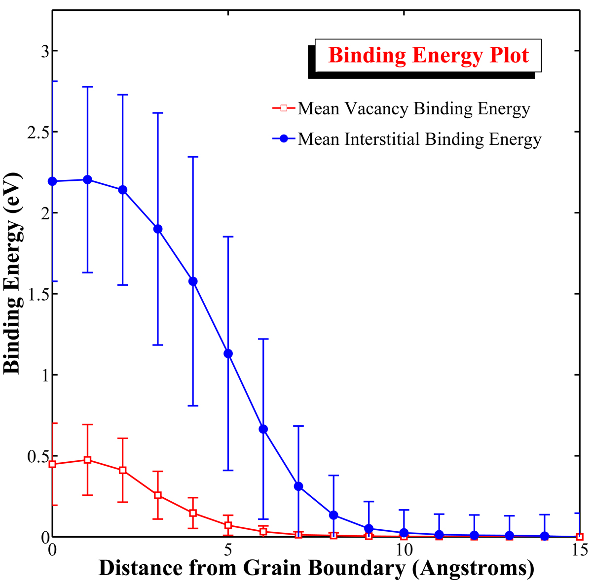

1. Plot Strain-Stress Curve from Lammps Output Data
This example shows how to plot a stress-strain curve in MATLAB using output data from the parallel molecular dynamics code, LAMMPS. This example will reference the scripts and data of the Uniaxial Tension in Single Crystal Aluminum and Uniaxial Compression in Single Crystal Aluminum examples.
1 | % Analyze def1.txt files |
The following script will combine the tensile and compressive curves into a single plot. Note that only the principal stresses in the x direction have been included.
1 | % compare repsonses for uniaxial tension and compression in single crystal aluminum |
2. Journal Quality Plotting
This example shows a plot for binding energy as a function of distance for point defects near a grain boundary. The plot can be saved as a Matlab figure after it appears. Additionally, the exportfig command, which refers to a script that can be downloaded at the MATLAB Central File website, exports the plot to a jpeg, tiff, or eps file.
1 | mean1 = [0.448 0.475 0.411 0.257 0.147 0.071 0.032 0.013 0.008 0.004 0.002 0.002 0.001 0.001 0.001 -0.000]; |

website
3. Errorbars Plot
This shows a plot for stress as a function of strain for a fictitious material with fictitious errors at every point. The plot can be saved as a MATLAB figure after it appears. Additionally, the exportfig command, which refers to a script that can be downloaded at the MATLAB Central File website, exports the plot to a jpeg, tiff, or eps file.
1 | x = 0.01:0.01:1; |